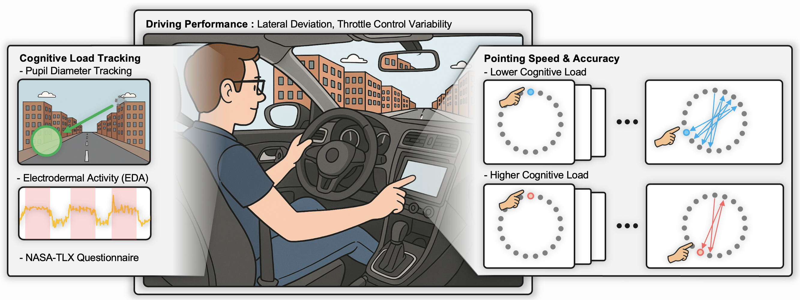

Touchscreens in Motion: Quantifying the Impact of Cognitive Load on Distracted Drivers

This study investigates the interplay between a driver’s cognitive load, touchscreen interactions, and driving performance. Using an 𝑁 -back task to induce four levels of cognitive load, we measured physiological responses (pupil diameter, electrodermal activity), subjective workload (NASA-TLX), touchscreen performance (Fitts’ law), and driving metrics (lateral deviation, throttle control). Our results reveal significant mutual performance degradation, with touchscreen pointing throughput decreasing by over 58.1% during driving conditions and lateral driving deviation increasing by 41.9% when touchscreen interactions were introduced. Under high cognitive load, participants demonstrated a 20.2% increase in pointing movement time, 16.6% decreased pointing throughput, and 26.3% reduced off-road glance durations. We identified a prevalent "hand-before-eye" phenomenon where ballistic hand movements frequently preceded visual attention shifts. These findings quantify the impact of cognitive load on multitasking performance and demonstrate how drivers adapt their visual attention and motor-visual coordination when cognitive resources are constrained.
View paper →